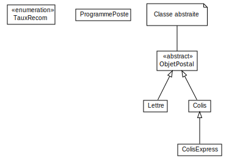
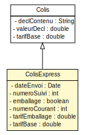
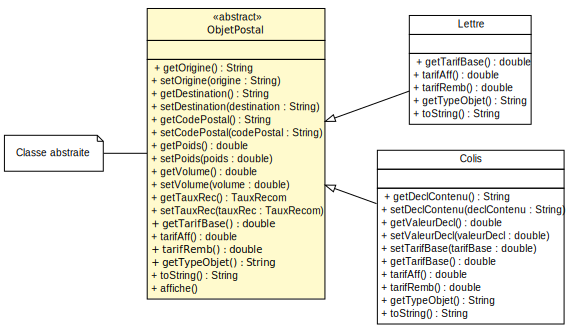
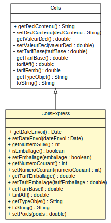

<!doctype html>
<html lang="en">
    <head>
        <meta charset="utf-8">
        <title>reveal-md</title>
        <link rel="stylesheet" href="./css/reveal.css">
        <link rel="stylesheet" href="./css/theme/white.css" id="theme">
        <link rel="stylesheet" href="./css/highlight/zenburn.css">
        <link rel="stylesheet" href="./css/print/paper.css" type="text/css" media="print">

    </head>
    <body>

        <div class="reveal">
            <div class="slides"><section  data-markdown><script type="text/template">### TP3 - Retour en Laponie
---------------------------</script></section><section  data-markdown><script type="text/template">#### Vue globale
-------------------------


(sans attributs ni opérations)
</script></section><section  data-markdown><script type="text/template">#### Classe Abstraite
---------------------

* Classe "générale" qui occupe un rang élevé dans la hierarchie des classes
    * Ne peut pas être instanciée
    * Peut contenir des méthodes abstraites (sans corps)
    > Si une classe contient au moins une méthode abstraite, alors il faut déclarer cette classe
    abstraite
</script></section><section  data-markdown><script type="text/template">#### Classe abstraite
---------------------
<pre><code>
public abstract class ObjetPostal {
    ...
    abstract public double getTarifBase();
    
    public double tarifAff(){
        double t=this.getTarifBase();
        if (this.getTauxRec().equals(TauxRecom.moyen)) t+=0.5;
        else 
            if (this.getTauxRec().equals(TauxRecom.fort)) t+=1.5;
        return t;
    }
    
    abstract public double tarifRemb();
}
</code></pre>
</script></section><section  data-markdown><script type="text/template">#### Héritage - attributs
------------------
<div style="float:left;width:20%;">

<small>(Sans opérations)</small>
</div>

</div>
<div style="float:right;width:80%;">
<pre><code>
public class Colis extends ObjetPostal {
    private String declContenu;
    private double valeurDecl;
    private static double tarifBase=2;
}
</code></pre>

<pre><code>
public class ColisExpress extends Colis {
    private Date dateEnvoi;
    private final int numeroSuivi;
    private boolean emballage;
    private static int numeroCourant=0;
    private static double tarifEmballage=3;
    private static double tarifBase=30;
}
</code></pre>
</div>
</script></section><section  data-markdown><script type="text/template">
#### Héritage - Opérations 
------------------


<small>(sans attributs)</small>
</script></section><section  data-markdown><script type="text/template">
#### Héritage - Opérations
------------------
<pre><code>
public abstract class ObjetPostal {
    public double tarifAff(){
        double t=this.getTarifBase();
        if (this.getTauxRec().equals(TauxRecom.moyen)) t+=0.5;
        else 
            if (this.getTauxRec().equals(TauxRecom.fort)) t+=1.5;
        return t;
    }
}
</code></pre>
<pre><code>
public class Colis extends ObjetPostal {
    @Override
    public double tarifAff() {
        double t = super.tarifAff();
        if (this.getVolume()>1.0/8.0){ t+= 3; }
        return t;
    }
}
</code></pre>
</script></section><section  data-markdown><script type="text/template">#### Héritage - Redéfinition de méthode
------------------
<div style="float:left;width:20%;">

</div>

</div>
<div style="float:right;width:80%;">
<pre><code>
public class Colis extends ObjetPostal {
    @Override
    public double tarifAff() {
        double t = super.tarifAff();
        if (this.getVolume()>1.0/8.0) t+= 3;
        return t;
    }
}
</code></pre>

<pre><code>
public class ColisExpress extends Colis {
    public double tarifAff() {
        double t = this.getTarifBase();
        if (this.emballage){
            t+= ColisExpress.tarifEmballage;
        } 
        return t;
    }
}
</code></pre>
</div>
</script></section><section  data-markdown><script type="text/template">
#### Polymorphisme - Transformation de type
------------------

> Une référence sur un objet d’une sous-classe peut toujours être implicitement convertie
en une référence sur un objet de la super-classe.

<pre><code>ObjetPostal o = new Lettre();</code></pre>
<small>ou</small>
<pre><code>Colis c = new ColisExpress();</code></pre>
</script></section><section  data-markdown><script type="text/template">#### Polymorphisme des opérations
------------------
<pre><code>
public static void main(String args[]){
    Colis o3 = new ColisExpress("pole sud", "Paris", "75000",...);
    System.out.println(o3.toString()); 
}
</code></pre>

La méthode toString() appelée est celle de la classe ColisExpress
<small>
* Le code de la méthode qui sera réellement exécuté n’est pas figé
* Un appel de message autorisé à la compilation donnera des résultats différents à l’exécution
* Le langage retrouve selon l’objet et la classe à laquelle il doit son existence le code à exécuter (on parle de liaison dynamique).

</small></script></section></div>
        </div>

        <script src="./lib/js/head.min.js"></script>
        <script src="./js/reveal.js"></script>

        <script>
            function extend() {
              var target = {};
              for (var i = 0; i < arguments.length; i++) {
                var source = arguments[i];
                for (var key in source) {
                  if (source.hasOwnProperty(key)) {
                    target[key] = source[key];
                  }
                }
              }
              return target;
            }

            // Optional libraries used to extend on reveal.js
            var deps = [
              { src: './lib/js/classList.js', condition: function() { return !document.body.classList; } },
              { src: './plugin/markdown/marked.js', condition: function() { return !!document.querySelector('[data-markdown]'); } },
              { src: './plugin/markdown/markdown.js', condition: function() { return !!document.querySelector('[data-markdown]'); } },
              { src: './plugin/highlight/highlight.js', async: true, callback: function() { hljs.initHighlightingOnLoad(); } },
              { src: './plugin/zoom-js/zoom.js', async: true },
              { src: './plugin/notes/notes.js', async: true },
              { src: './plugin/math/math.js', async: true }
            ];

            // default options to init reveal.js
            var defaultOptions = {
              controls: true,
              progress: true,
              history: true,
              center: true,
              transition: 'default', // none/fade/slide/convex/concave/zoom
              dependencies: deps
            };

            // options from URL query string
            var queryOptions = Reveal.getQueryHash() || {};

            var options = {"slideNumber":"c/t","controls":false,"center":false};
            options = extend(defaultOptions, options, queryOptions);
        </script>


        <script>
            Reveal.initialize(options);
        </script>
    </body>
</html>
